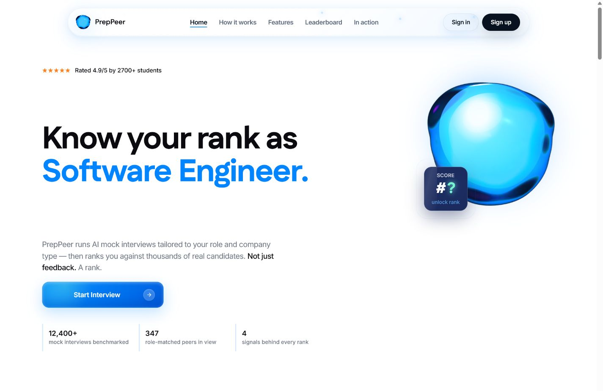
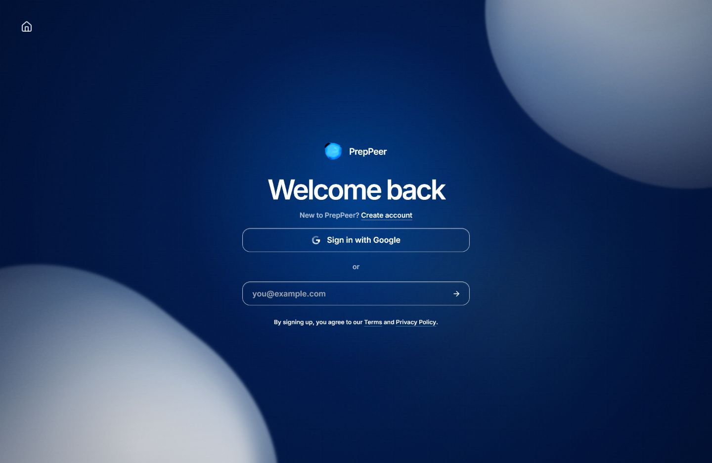
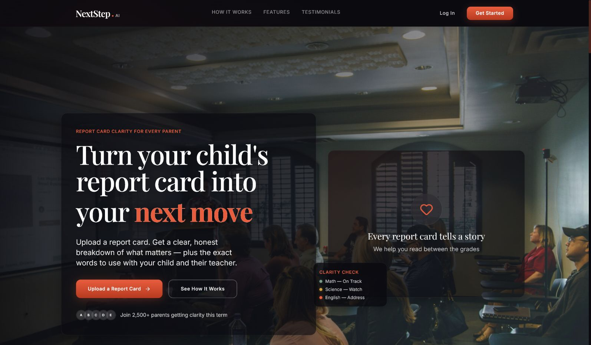
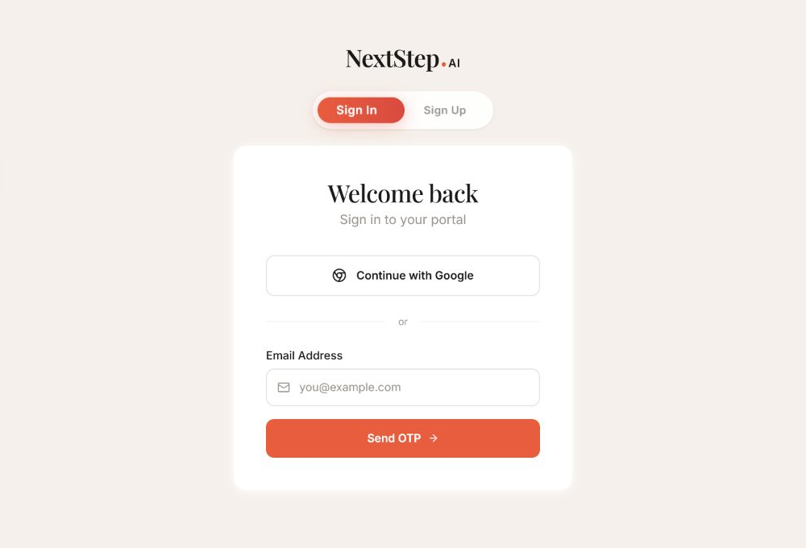
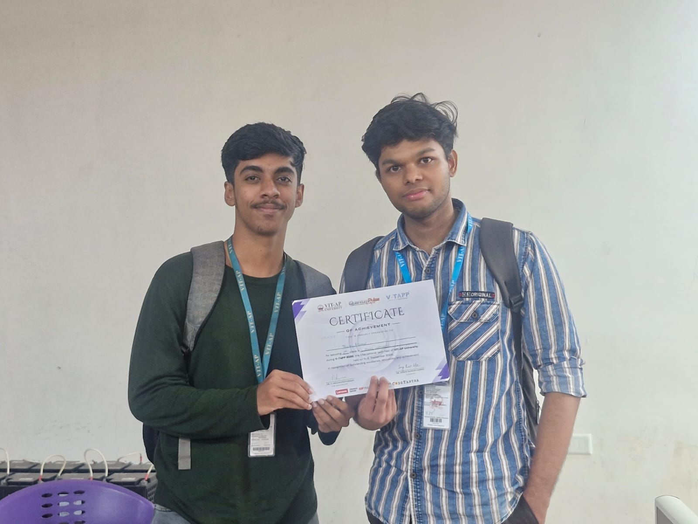
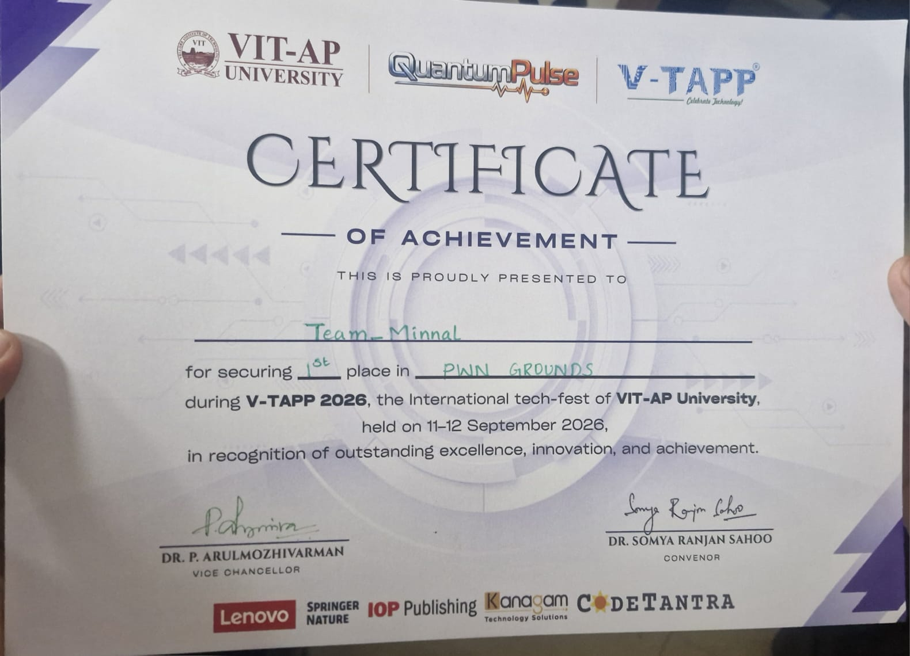

01 / AI INTERNSHIP
AI Fluency Intern at FlyRank AI
Remote · July – August 2026Tested prompts across Claude, ChatGPT, and Gemini, comparing responses for accuracy, consistency, and polish. Helped turn website requirements into working builds.
RAJAT KRISHNAN
I build AI products, web apps, and data tools. I like taking a practical problem and making something people can use.
EXPERIENCE
01 / AI INTERNSHIP
Tested prompts across Claude, ChatGPT, and Gemini, comparing responses for accuracy, consistency, and polish. Helped turn website requirements into working builds.
02 / EXPERIENCE
Producing AI-assisted scripts, visuals, short-form content, menus, and branded marketing assets for wellness and local business clients.
03 / OPEN FOR
Interested in prompt engineering, AI products, full-stack development, and automation. I bring projects I can show and a habit of learning by doing.
SELECTED WORK
01
Role-specific mock interviews with instant scoring across four dimensions, live peer rankings, and shareable score cards. I refined the prompts to keep questions and feedback relevant across job categories.


02
A report-card clarity product for parents that turns academic signals into understandable next steps and teacher conversation prompts.


ALSO BUILT
03Energy theft detection using 30 days of simulated meter data. Flags tampering, bypass connections, and slow-decline fraud; loss tracing compares transformer supply with consumer readings.
Python · Scikit-learn · Streamlit · SQLite · Folium · PlotlyOne place for students and faculty to browse and register for campus events. Student, faculty, and admin access, JWT authentication, QR registrations, analytics, and CSV exports.
Node.js · Express · MongoDB · JavaScript · JWTExplored Hyperliquid trading data alongside the Fear and Greed Index to understand how market sentiment relates to trader behaviour and position sizing.
Python · Pandas · Jupyter NotebookOUTSIDE THE BUILD


1ST PLACE / PWN GROUNDS
I won the King of the Hill cybersecurity competition at V-TAPP 2026, using AI tools as part of my approach. It gave me hands-on competition experience and a reason to keep exploring security.
VIT-AP · 11–12 September 2026
View certificateABOUT ME
I'm Rajat, a third-year Integrated M.Tech CSE student at VIT-AP (2024–2029). My work spans prompt engineering, AI products, full-stack apps, and data analysis. At FlyRank AI, I learned to test prompts and compare model responses, not just accept the first output. I’m also exploring security through AI-assisted competitions.
Before VIT-AP: Ursuline English Medium School, Pariyaram, Kerala · 2023–2024.
STACK
PORTFOLIO GUIDE
Want to know more about a project, my experience, or the tools I use? Ask here, or download my resume below.
Projects, experience & the details
CONTACT